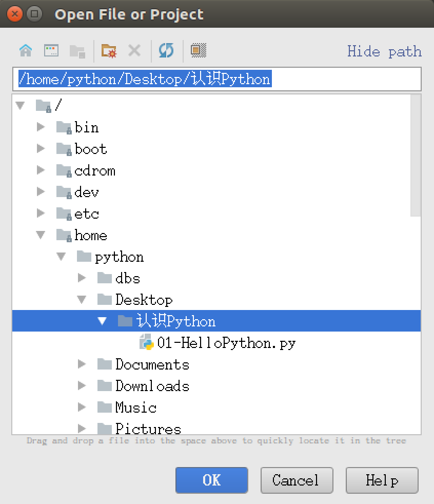
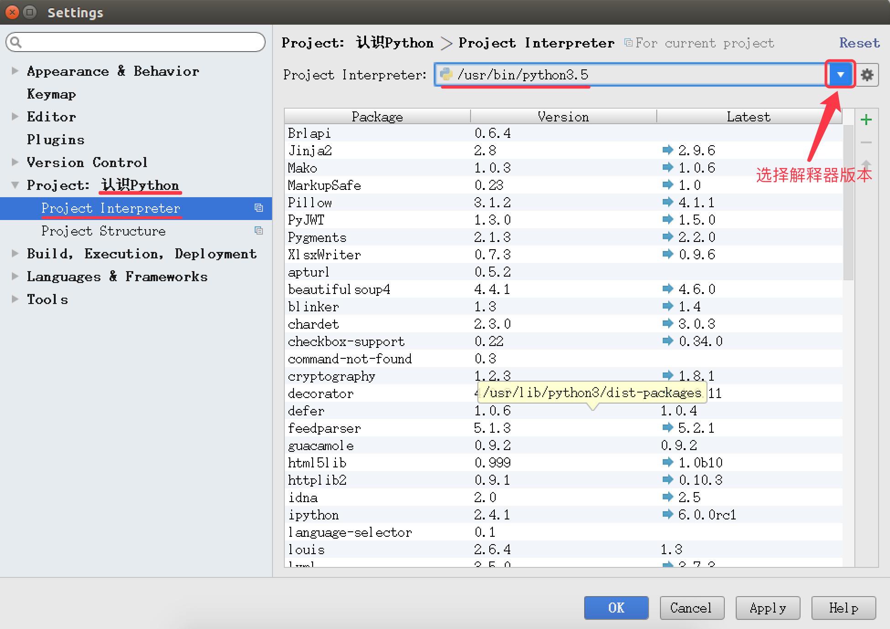

PyCharm 的初始设置（知道）
目标
- 恢复 PyCharm 的初始设置
- 第一次启动 PyCharm
- 新建一个 Python 项目
- 设置 PyCharm 的字体显示
- PyCharm 的升级以及其他
PyCharm 的官方网站地址是：https://www.jetbrains.com/pycharm/
01. 恢复 PyCharm 的初始设置
PyCharm 的 配置信息 是保存在 用户家目录下 的 .PyCharmxxxx.x 目录下的，xxxx.x 表示当前使用的 PyCharm 的版本号
如果要恢复 PyCharm 的初始设置，可以按照以下步骤进行：
- 关闭正在运行的
PyCharm
- 关闭正在运行的
- 在终端中执行以下终端命令，删除
PyCharm的配置信息目录：
- 在终端中执行以下终端命令，删除
1 | $ rm -r ~/.PyCharm2016.3 |
- 重新启动
PyCharm
- 重新启动
02. 第一次启动 PyCharm
- 导入配置信息
- 选择许可协议
- 配置初始界面
2.1 导入配置信息
- 在第一次启动
PyCharm时，会首先提示用户是否导入 之前的配置信息 - 如果是第一次使用，直接点击 OK 按钮

2.2 选择许可协议
- PyCharm 是一个付费软件，购买费用为 199$ / 年 或者 19.90$ ／ 月
- 不过 PyCharm 提供了对 学生和教师免费使用的版本
- 商业版本会提示输入注册信息，或者选择免费评估
2.3 PyCharm 的配置初始界面
- 在初始配置界面，可以通过
Editor colors and fonts选择 编辑器的配色方案
2.4 欢迎界面
- 所有基础配置工作结束之后，就可以看到
PyCharm的 欢迎界面了，通过 欢迎界面 就可以开始开发 Python 项目了

03. 新建/打开一个 Python 项目
3.1 项目简介
- 开发 项目 就是开发一个 专门解决一个复杂业务功能的软件
- 通常每 一个项目 就具有一个 独立专属的目录，用于保存 所有和项目相关的文件
- 一个项目通常会包含 很多源文件
3.2 打开 Python 项目
- 直接点击 Open 按钮，然后浏览到之前保存 Python 文件的目录，既可以打开项目
- 打开之后，会在目录下新建一个
.idea的目录，用于保存 项目相关的信息，例如：解释器版本、项目包含的文件等等 - 第一次打开项目，需要耐心等待
PyCharm对项目进行初始设置

设置项目使用的解释器版本
- 打开的目录如果不是由
PyCharm建立的项目目录，有的时候 使用的解释器版本是Python 2.x的，需要单独设置解释器的版本 - 通过 File / Settings… 可以打开设置窗口，如下图所示：

3.3 新建项目
1) 命名规则
- 以后 项目名 前面都以 数字编号，随着知识点递增，编号递增
- 例如：01_Python 基础、02_分支、03_循环…
- 每个项目下的 文件名 都以
hm_xx_知识点方式来命名- 其中 xx 是演练文件的序号
- 注意
- 命名文件名时建议只使用 小写字母、数字 和 下划线
- 文件名不能以数字开始
- 通过 欢迎界面 或者菜单 File / New Project 可以新建项目
2) 演练步骤
- 新建
01_Python基础项目，使用 Python 3.x 解释器 - 在项目下新建
hm_01_hello.pyPython 文件 - 编写
print("Hello Python")代码
04. 设置 PyCharm 的字体显示

05. PyCharm 的升级以及其他
PyCharm 提供了对 学生和教师免费使用的版本
- 教育版下载地址：https://www.jetbrains.com/pycharm-edu/download/#section=linux
- 专业版下载地址：https://www.jetbrains.com/pycharm/download/#section=linux
5.1 安装和启动步骤
- 执行以下终端命令，解压缩下载后的安装包
1 | $ tar -zxvf pycharm-professional-2017.1.3.tar.gz |
- 将解压缩后的目录移动到
/opt目录下，可以方便其他用户使用
- 将解压缩后的目录移动到
/opt目录用户存放给主机额外安装的软件
1 | $ sudo mv pycharm-2017.1.3/ /opt/ |
- 切换工作目录
1 | $ cd /opt/pycharm-2017.1.3/bin |
- 启动
PyCharm
- 启动
1 | $ ./pycharm.sh |
5.2 设置专业版启动图标
- 在专业版中，选择菜单 Tools / Create Desktop Entry… 可以设置任务栏启动图标
- 注意：设置图标时，需要勾选
Create the entry for all users
- 注意：设置图标时，需要勾选
5.3 卸载之前版本的 PyCharm
1) 程序安装
- 程序文件目录
- 将安装包解压缩，并且移动到
/opt目录下 - 所有的相关文件都保存在解压缩的目录中
- 配置文件目录
- 启动
PyCharm后，会在用户家目录下建立一个.PyCharmxxx的隐藏目录 - 保存
PyCharm相关的配置信息
- 快捷方式文件
/usr/share/applications/jetbrains-pycharm.desktop
在
ubuntu中，应用程序启动的快捷方式通常都保存在/usr/share/applications目录下
2) 程序卸载
- 要卸载
PyCharm只需要做以下两步工作： - 删除解压缩目录
1 | $ sudo rm -r /opt/pycharm-2016.3.1/ |
- 删除家目录下用于保存配置信息的隐藏目录
1 | $ rm -r ~/.PyCharm2016.3/ |
如果不再使用 PyCharm 还需要将
/usr/share/applications/下的jetbrains-pycharm.desktop删掉
5.4 教育版安装演练
1 | # 1. 解压缩下载后的安装包 |
后续课程都使用专业版本演练
设置启动图标
- 编辑快捷方式文件
1 | $ sudo gedit /usr/share/applications/jetbrains-pycharm.desktop |
- 按照以下内容修改文件内容，需要注意指定正确的
pycharm目录
- 按照以下内容修改文件内容，需要注意指定正确的
1 | [Desktop Entry] |